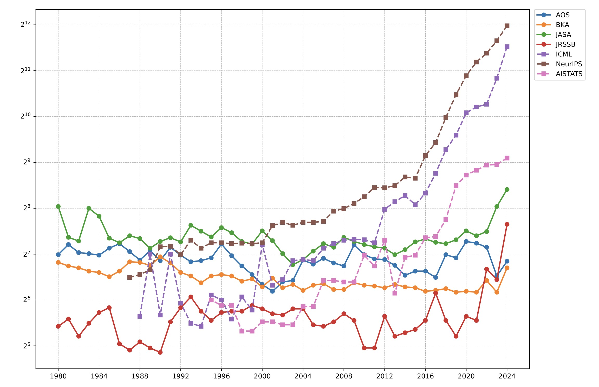
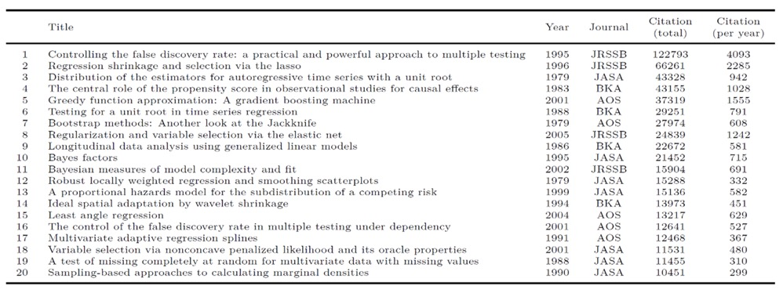
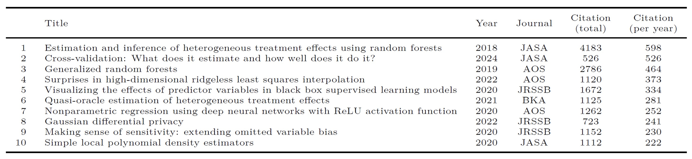
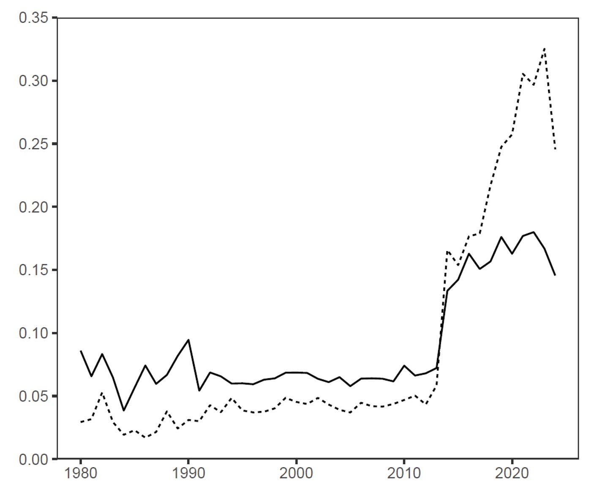
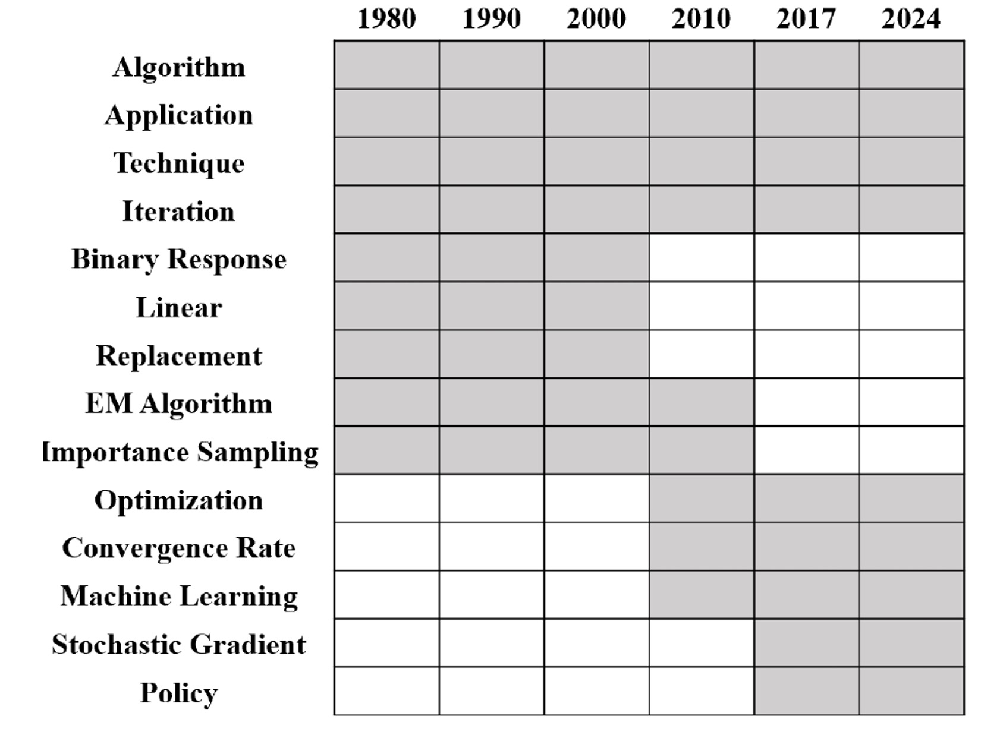

Introduction
Statistics has changed dramatically over the last 40+ years—from foundational ideas like the bootstrap and LASSO to today’s deep learning theory, interpretability, privacy, and causal ML. But what exactly changed, when, and how? Which shifts reflect emerging scientific needs? How does statistics connect to modern data science and AI? A research team from Renmin University of China answers those questions with a large-scale, content-based analysis of statistical research.
What We Analyzed
We assembled a corpus spanning both “core statistics” and the statistics–AI interface:
- Four top statistics journals: Journal of the American Statistical Association (JASA), Annals of Statistics (AOS), Journal of the Royal Statistical Society Series B: Statistical Methodology (JRSSB), Biometrika (BKA), covering 1980–2024
- Three AI conferences with strong statistics overlap: NeurIPS, ICML, AISTATS, covering 2014–2024. We filtered conference papers to focus on those most relevant to statistical research.
Diverging Publication Volumes: Rapid Conference Growth vs. Stable Journals
Since around 2010, statistics-relevant AI conferences have expanded rapidly, while the annual publication volume of the four statistics journals has remained relatively stable. This divergence is consistent with different publication strategies:
- Conferences often keep acceptance rates within a relatively stable range, so the number of accepted papers can grow as submissions grow.
- Journals often maintain a more fixed annual page budget, which limits publication volume and leads to lower acceptance rates.
One implication is that some frontier work may appear in conferences earlier (or more frequently) than in journals.

Highly-Cited Papers Analysis: From Foundational Methods to AI-Era Challenges
We analyzed highly cited papers across two periods: before and after 2015. Review papers are excluded.
- Period 1 (1979–2014): Method-building milestones.
We analyzed papers with more than 10,000 citations by Google Scholar. These highly-cited papers established core tools used across fields (multiple testing/FDR, sparsity and high-dimensional methods, resampling, causal inference, computation). - Period 2 (2015–2024): Responding to AI-era demands.
To compare newer papers more fairly, the paper highlights high impact using citations per year. The top items reflect modern themes such as causal ML and heterogeneous effects, interpretability, deep learning theory, and privacy.


Eight Core Topics in Statistical Research
Using the developed topic modeling method (with K = 8 topics), we found a compact, interpretable map of the literature:
- Topic 1: Algorithm and optimization
- Topic 2: Bayesian statistics
- Topic 3: Deep learning
- Topic 4: Biostatistics
- Topic 5: Nonparametric statistics
- Topic 6: Regression
- Topic 7: Unsupervised learning
- Topic 8: Other classic areas
From the extracted topics, we can see that statistics is increasingly engaging with AI-related issues. For example, deep learning (Topic 3) has emerged as a key area within modern data science. With further analysis, we found classical statistical methods also remain relevant: regression analysis (Topic 6) is widely used in predictive modeling, and Bayesian statistics (Topic 2) underpins probabilistic inference in machine learning, including deep learning and reinforcement learning. Overall, classical statistical theories continue to evolve alongside modern data science, driving innovation across fields.
Evolving Statistical Focus: Growth of Deep Learning and Algorithms
We analyzed the dynamic evolution of topics and found some key topic trends.
- Deep learning grows rapidly after the mid-2010s.
- Algorithm/optimization stays important throughout and rises in the modern era.
- Topic vocabulary shifts over time (e.g., from EM-style language toward stochastic optimization and modern ML terms).

